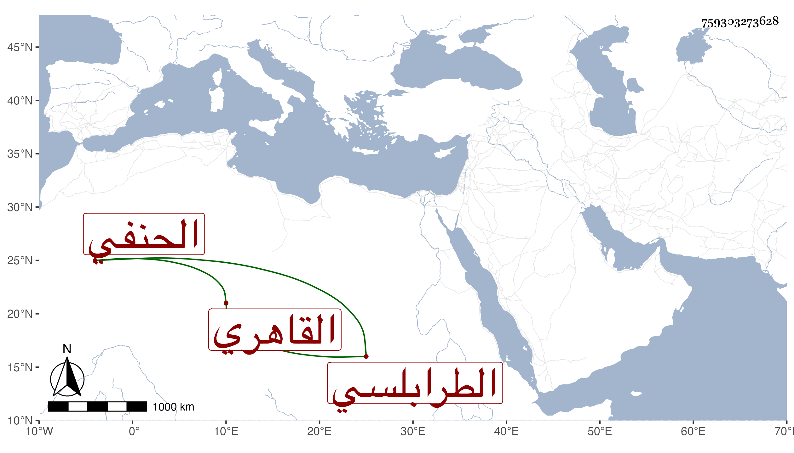

0902Sakhawi.DawLamic.ITO20230111-ara1.EIS1600.759303273628
Biography ID: 759303273628
489
عبد الرزاق بن حمزة الزين أبو الصفا الطرابلسي ثم القاهري الحنفي نزيل الاشرفية برسباي . ممن انتمى لجوهر اللالا وعمل إمامه بحيث عينه لتصوف بالاشرفية وغضب ابن الهمام لكونه عين له غيره وكان ذلك سببا لأعراضه عن المشيخة وكان فاضلا متقن الكتابة بليغا في التجويد جميل الهيئة ممن أخذ القراءات عن ابن الجزري والكتابة عن الزين بن الصائغ وأقرأ وكتب مع فتوة وتودد رأيته كثيرا وعاش إلى بعد الستين وهو ممن لازم الشمس بن الجندي الحنفي في العربية وغيرها وكان ينوب عنه في خزن كتب الاشرفية ثم رام الاستقرار فيه بعده فقدم العلاء القلقشندي عليه ، وقرأ على شيخنا في سنة اثنتين وأربعين في البخاري ووصفه بالبارع الماهر الفاضل الأوحد المفنن وقال إن قراءته قراءة فصيحة محققة مطربة وسأل الله في دوام النفع بصاحب الاجازة وأن يسبغ عليه النعمة الوافرة بالبساطة والوجازة ، وسمى والده محمدا والصواب ما تقدم .
